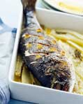
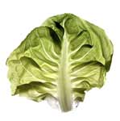
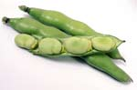
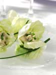

|  | Ricetta: Americano |
 |
|  |
Categoria: aperitivi Ingredienti: 5/10 Bitter Campari-5/10 Vermouth Martini rosso-soda water-fetta di arancia-scorza di limone Preparazione: Versare, direttamente In un tumbler, con abbondante ghiaccio, il Campari e il Vermouth rosso. Mescolare con lo steerer, colmare con la soda e guarnire con una fetta di arancia ed una scorzetta di limone. Questo cocktail, a dispetto del nome, nasce in Italia nel 1860 e precisamente al Campari's Bar di Milano. P.S. E' anche uno dei cocktail preferiti da James Bond. Data ultimo aggiornamento: 9/1/2011 |
 |
| Ritorna alla lista | Scrivi un commento | Pagina di ricerca |